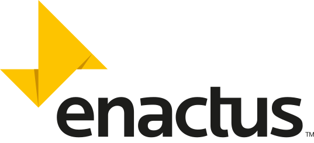
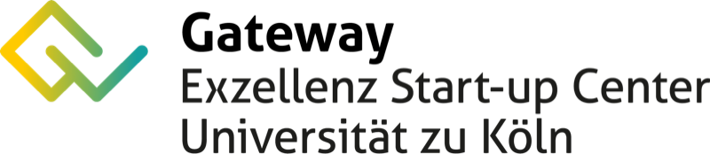

Für Hilfsorganisationen, Verbände und Kommunen
Nicht noch ein Tool.
Mehr Zeit für Menschen.
akoot fügt sich in das ein, was Sie schon nutzen. Zusagen, Stunden und Nachweise laufen von selbst, und Sie sehen, was Ihr Ehrenamt bewirkt.
- Keine neue App, Ihre Systeme bleiben
- Der Mensch entscheidet, akoot unterstützt
- Keine Daten über Klientinnen und Klienten
Entstanden aus einer Masterarbeit an der Universität zu Köln, mit diesen Partnern


Eine Schicht für alles, was da ist. Nicht noch eine Insel.
Jede neue Lösung wird schnell zur nächsten Insel, wenn sie sich nicht in die anderen Systeme einfügt. akoot geht andersherum vor, in vier Schritten.
Verbinden statt ersetzen.
akoot dockt an Fachsoftware, Dienstplan, Vermittlungsplattform, Kalender, Tabellen und Messenger an. Nichts wird abgeschaltet, niemand muss ein neues System lernen.
- Eine Zusage aus der Vermittlung landet im Dienstplan, ohne Abtippen
- Ehrenamtliche sagen per Link zu oder über den Messenger, den Ihr Haus erlaubt
- Die Koordination sieht nur noch, wo jemand fehlt
- Unklare Fälle entscheidet immer ein Mensch
Wissen, das bleibt
Wenn Menschen wechseln, bleibt das Wissen.
Absprachen, Abläufe, Ansprechpersonen und Erfahrungen stecken heute in Köpfen, Gruppenchats und Tabellen. akoot hält fest, was Ihr Team freigibt, ordnet es und hält es aktuell. So finden sich neue Leute schneller zurecht, und nichts geht verloren.
- Nur Wissen der Organisation, keine Daten über Klientinnen und Klienten
- Nichts aus privaten Chats, nur was Ihr Team ausdrücklich freigibt
- Datenschutz und Mitarbeitervertretung sind von Anfang an dabei
- Das Wissen gehört Ihnen, wo es liegt, legen Sie fest
Gebaut für die Tafel um die Ecke. Und für den ganzen Verband.
Ob 20 Ehrenamtliche oder 2.000 an vielen Standorten. akoot wächst mit, weil jede Verbindung einmal gebaut und dann wiederverwendet wird.
Zum Angebot →Berichte für Förderer, ohne Zusammensuchen
Einsätze, Stunden und Wirkung liegen schon vor, weil akoot sie unterwegs mitzählt. Der Bericht ist ein Entwurf, den Ihr Team prüft.
Ehrenamt ohne Papier
Zusagen, Stunden, Pauschale und Nachweise laufen digital, ohne eigene Lizenz für jede ehrenamtliche Person.
Raus aus der Schatten-IT
Dienstliches läuft nicht mehr über große private Gruppen, in denen jeder jede Nummer sieht.
Überall koordiniert die Gruppe im Messenger. Abends tippt jemand alles ab. Und jede neue Plattform wurde zur nächsten Insel.Ergebnis der MasterarbeitInterviews mit Tafel, AWO, Lebenshilfe, einer Freiwilligenagentur und weiteren Organisationen in NRW, Universität zu Köln 2026
Mails für einen einzigen Firmeneinsatz bei einer Tafel. Im direkten Kontakt hätten zwei gereicht.
Ehrenamtliche haben in der Fachsoftware oft gar keinen Zugang, weil jeder Zugang eine eigene Lizenz braucht.
Ein Träger der BehindertenhilfeInterview zur Masterarbeit, 2026Klein anfangen, mit der Organisation wachsen.
Für eine Organisation, die wissen will, wo sie steht.
- Landkarte Ihrer Systeme und wer was pflegt
- Wo Wissen liegt und wer Zugriff hat
- Wo heute doppelt gearbeitet wird
- Fahrplan mit den ersten zwei Verbindungen
Für eine Organisation, die verbunden arbeiten will.
- Die ersten Verbindungen laufen im Alltag
- Wissen der Organisation an einem Ort
- Berichte für Förderer als Entwurf
Für Verbände, Kommunen und Stiftungen.
- Eine Schicht für mehrere Träger und Standorte
- Gemeinsames Wissen, wo es sinnvoll ist
- Wirkung über alle Träger auf einen Blick
- Einführung Schritt für Schritt
Häufige Fragen
Ihre Frage ist nicht dabei? Schreiben Sie uns, wir antworten persönlich.
Frage stellen →Ersetzt akoot unsere Fachsoftware?
Nein. akoot verbindet, was Sie schon haben. Fachsoftware, Dienstplan und Kalender bleiben, wie sie sind.
Liest akoot unsere Chats mit?
Nein. akoot hält nur fest, was Ihr Team ausdrücklich freigibt. Private Chats und Daten über Klientinnen und Klienten bleiben außen vor.
Wer entscheidet, die KI oder wir?
Immer Sie. akoot macht Vorschläge und bereitet vor. Ein Mensch prüft und entscheidet.
Müssen wir WhatsApp nutzen?
Nein. Ein Link reicht. Ob ein Messenger dazukommt und welcher, entscheiden Sie nach Ihren Datenschutzregeln.
Wo liegen die Daten?
Das legen wir gemeinsam fest, bevor etwas angebunden wird. Ihre Organisation bleibt Verantwortliche nach DSGVO, Datenschutz und Mitarbeitervertretung sind von Anfang an dabei.
Wer steckt dahinter?
akoot ist ein Projekt von Enactus Köln e.V., der studentischen Initiative für soziales Unternehmertum an der Universität zu Köln. Founder ist Wladimir Nikhamkin. Umgesetzt und betreut wird akoot mit Nösse Consulting aus Leverkusen.
Nächster Schritt
30 Minuten für Ihre Landkarte.
Wir schauen gemeinsam auf Ihre Systeme und auf eine Stelle, an der heute doppelt gearbeitet oder Wissen gesucht wird. Am Ende wissen Sie, ob sich ein Kompass lohnt.
- Kostenfreies Erstgespräch
- Mit Wladimir Nikhamkin, Founder akoot
- Per Teams oder bei Ihnen vor Ort in Düsseldorf und Köln
Ihr Mailprogramm öffnet sich mit der fertigen Anfrage. Senden Sie die Mail ab, dann bestätigt Wladimir Nikhamkin den Termin mit einer Einladung.
Kein Mailprogramm? Schreiben Sie Ihren Wunschtermin an w.nikhamkin@noesse.de.
Weniger Inseln.
Mehr Zeit für Menschen.
Menschen helfen Menschen. akoot hilft im Hintergrund.